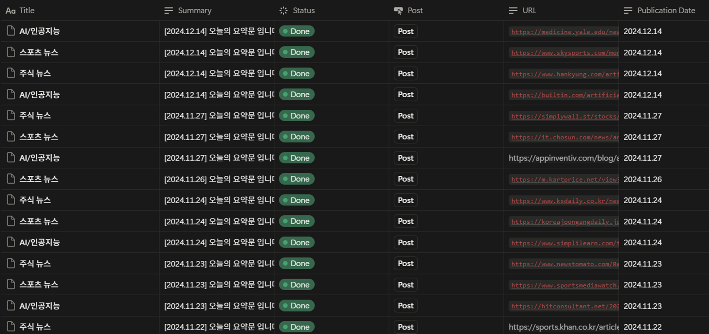
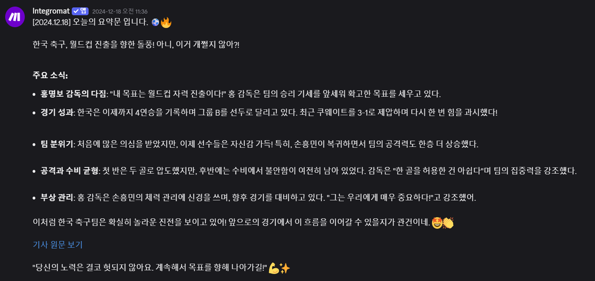

정보 과부하 시대, 뉴스 큐레이션의 비효율
매일 쏟아지는 기사 속에서 필요한 정보를 골라내기 위해 매일 아침 수십 분을 허비하는 현대인의 페인 포인트를 포착했습니다.
문제 1: 시간 소모
해외 연구에서, 뉴스 환경은 사용자에게 다양한 소스와 대량의 정보를 동시에 제공하여 혼란을 주고 선택 과정의 비용을 증가시킨다고 보고합니다. 우리는 관심사 맞춤형 정보 큐레이션을 제공해, 이 선택 과정 비용의 절감을 목표로 합니다.
문제 2: 노이즈 필터링
여러 연구에서, 과잉 뉴스와 자극적인 헤드라인은 ‘정보 과부하 → 뉴스 피로 → 분석 마비와 회피’로 이어진다고 보고합니다. 우리는 중복과 자극을 걷어내고 ‘인사이트만 남긴 요약’을 제공해, 이 인지적 피로를 줄이는 것을 목표로 합니다.

기존 뉴스 소비 행태 vs AI Lounge 도입 후의 효율성 비교
문제를 해결하기 위한 아이디어를 설계 후, 교내 커뮤니티를 통해 수요 조사를 진행했습니다. 이후, 리스크 요인(AI 환각 등)을 분석하여 PoC 개발에 착수했습니다.
No-code와 Python의 하이브리드 자동화
단순한 정보 수집을 넘어, 자산화-정제-요약-배포로 이어지는 견고한 파이프라인을 구축했습니다.
Step 1: Python 기반 타겟팅 크롤링
GoogleSearch API를 활용해 전문 테크 플랫폼에서 특정 키워드를 필터링하여 자동으로 데이터를 수집합니다. LLM API를 활용하여 최적화된 키워드를 추출합니다.
Step 2: Notion 데이터 자산화 및 추적
수집된 데이터는 Notion API를 통해 데이터베이스에 저장됩니다. 휘발성
공유가 아닌, 추후 검색 및 추적이 가능하도록 하는 관리자 감독을 위해 설계된
디자인입니다.
(위 과정은 추후 진행되는 모든 과정에서 기록됩니다.)
Step 3: ChatGPT 활용 지능형 요약 및 인사이트 추출
프롬프트 엔지니어링을 통해 단순 요약을 넘어, "왜 이 뉴스가 중요한가?", "어떤 산업에 영향을 주는가?" 등의 인사이트를 자동으로 추출합니다.
Step 4: Risk Control (Human-in-the-loop)
LLM의 환각 현상 및 가짜 뉴스 배포를 방지하기 위해 배포 직전 관리자가 최종 확인 버튼을 누르는 HITL 구조를 적용하여 신뢰성을 확보했습니다.

노코드 툴(Make)을 활용한 자동화 파이프라인
MVP 배포 및 실사용자 피드백으로 검증된 가치
정량적 성과
- 뉴스 검색 및 필터링 시간 기존 60분 → 1분 이내
- 전공 수업 평가 순위 1위, A+ 이수
- MVP 체험 신청 유저 25명 (목표치 조기 달성)
정성적 피드백
"AI 분야의 변화 속도가 빨라 정보를 접하기 힘들었는데, AI 라운지를 통해 핵심만 빠르게 파악할 수 있게 되었습니다."
"단순 요약뿐만 아니라 친숙한 말투, 희망적인 메세지, 원문 표시까지 해주어 거부감이 적고 신뢰가 갑니다."

Original 데이터에 대한 Attention Alignment

GAC 데이터에 대한 Attention Alignment